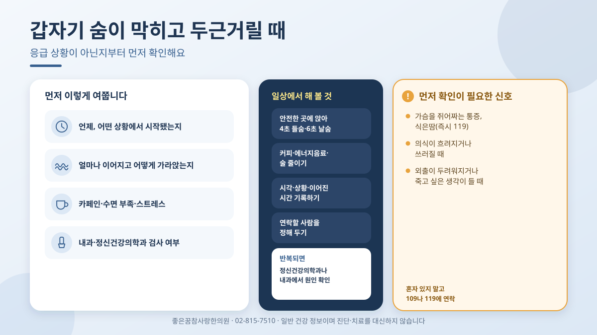

이종호 한의사 감수좋은꿈참사랑한의원 대표원장 (한의사 면허번호 19769)발행 2026-11-26 · 수정 2026-11-26
이 글의 차례
퇴근길 지하철, 사람들 사이에 끼어 서 있는데 갑자기 심장이 쿵쾅거리기 시작합니다. 숨을 쉬어도 공기가 들어오지 않는 것 같고, 손끝이 저리고, 식은땀이 흐릅니다. 이러다 쓰러지는 건 아닐까, 다음 역까지 버틸 수 있을까. 몇 분이 몇 시간처럼 느껴집니다.
이렇게 갑자기 숨이 막히고 가슴이 뛰며 큰일이 날 것 같은 두려움이 몰려오는 일은 생각보다 많은 분이 겪습니다. 처음 겪었다면 먼저 심장이나 폐의 응급 상황이 아닌지부터 확인해야 합니다. 검사에서 큰 이상이 없는데도 되풀이된다면, 정신건강의학과 진료와 함께 잠과 호흡, 몸의 긴장을 살펴보는 것이 다음 걸음입니다.
특히 가슴을 쥐어짜는 통증이 팔이나 턱으로 퍼지거나, 식은땀과 함께 숨이 계속 차거나, 의식이 흐려진다면 공황이라고 짐작하지 말고 바로 가까운 응급실로 가셔야 합니다. 공황인지 아닌지는 그다음에 따져도 늦지 않습니다.
진료실에서 이런 말씀을 자주 듣습니다. 응급실에 갔더니 심장은 괜찮다며 돌려보냈는데, 그 뒤로 또 올까 봐 지하철을 못 타겠다고요. 검사가 정상이라는 말이 안심이 되면서도, 그럼 이 고통은 뭐냐는 억울함이 남는다는 분도 계십니다.
그 두려움은 결코 엄살이 아닙니다. 몸이 실제로 겪은 일이고, 그 기억이 다음 외출을 붙잡는 것입니다. 그동안 혼자 얼마나 마음을 졸이셨을까 싶습니다.
왜 갑자기 이런 발작 같은 일이 생길까요
위험이 없는데도 몸의 비상벨이 울리는 것이라고 생각하면 이해가 쉽습니다. 비상벨이 울리면 심장은 빨리 뛰고, 숨은 가빠지고, 근육은 긴장하고, 손발 끝의 피는 몸 중심으로 모입니다. 도망칠 준비를 하는 것이지요. 손끝이 저리고 어지러운 것도 이 반응의 일부인 경우가 많습니다.
문제는 이 벨이 지하철 안, 회의실, 운전 중처럼 도망칠 수 없는 곳에서 울릴 때입니다. 몸은 도망치라고 하는데 갈 곳이 없으니 두려움은 더 커집니다. 숨을 더 들이마시려 애쓰다 보면 오히려 숨이 과해져 손발 저림과 어지러움이 심해지기도 합니다.
벨이 쉽게 울리는 바탕도 있습니다. 며칠째 잠이 부족했거나, 커피와 에너지 음료로 버텼거나, 큰일을 앞두고 오랫동안 긴장이 쌓였을 때입니다. 쉴 새 없이 화면을 보는 생활도 한몫합니다. 눈으로 들어오는 정보가 많을수록 몸은 긴장 쪽으로 기울기 쉽습니다.
한 번 겪고 나면 "또 오면 어쩌지" 하는 걱정이 새로운 긴장이 됩니다. 그래서 비슷한 장소를 피하게 되고, 피할수록 세상이 좁아집니다. 이 고리를 알아 두는 것만으로도 다음 순간을 조금 덜 두렵게 맞을 수 있습니다.
공황 같은 발작과 다른 원인은 어떻게 나눠 볼까요
가슴이 뛰고 숨이 막히는 느낌은 여러 원인에서 올 수 있습니다. 아래는 진단이 아니라 어디서 먼저 확인받을지 정하는 길잡이입니다.
심장에서 오는 경우
계단을 오르거나 힘을 쓸 때 가슴이 조이고, 쉬면 나아지는 통증은 심장 쪽 신호일 수 있습니다. 가슴 통증이 팔이나 턱, 등으로 퍼지거나 식은땀이 함께 나면 바로 응급실로 가셔야 합니다. 맥이 불규칙하게 건너뛰는 느낌이 자주 있다면 부정맥 확인을 위해 내과나 심장내과를 찾아 주세요.
폐와 호흡기에서 오는 경우
기침과 가래, 쌕쌕거리는 숨소리가 함께 있거나, 열이 나면서 숨이 차다면 폐 쪽을 먼저 확인합니다. 한쪽 다리가 붓고 아픈 뒤 갑자기 숨이 찬다면 지체하지 말고 응급실로 가셔야 합니다.
몸의 다른 원인
갑상선 기능이 높아지면 가슴이 뛰고 땀이 나고 손이 떨리며, 체중이 줄기도 합니다. 빈혈이나 저혈당도 두근거림과 어지러움을 부를 수 있습니다. 혈액 검사로 확인할 수 있는 것은 먼저 확인해 두면 마음도 한결 놓입니다.
공황 같은 발작에 가까운 모습
갑자기 시작해 10분 안팎에 가장 심해졌다가 서서히 가라앉는 경우가 많습니다. 심장이 멎을 것 같은 느낌, 뒷목이 당기는 느낌, 운전하다 정신을 잃을 것 같은 두려움, 비행기가 떠오를 때 몰려오는 공포를 말씀하시는 분이 많습니다. 검사에서 큰 이상이 없는데 되풀이된다면 정신건강의학과 진료를 받아 보시길 권합니다.
큰일을 겪은 뒤 조용히 누워 있을 때 베개에 귀를 대면 심장 소리가 크게 들리고, 무섭지 않은데도 가슴이 저절로 두근거린다는 분도 있습니다. 이런 두근거림은 가슴이 두근거리고 불안할 때는 어떤 점을 먼저 확인하나요?에 따로 정리해 두었습니다.
자주 하는 오해
"검사가 정상이니 마음이 약해서 그렇다"는 말을 들으면 더 움츠러들게 됩니다. 하지만 공황 같은 발작은 의지가 약해서 생기는 일이 아닙니다. 몸의 비상 장치가 예민하게 켜진 상태이고, 그만큼 오래 긴장하며 버텨 왔다는 뜻에 가깝습니다.
"숨이 막히니 더 깊이, 더 많이 들이마셔야 한다"고 생각하기 쉽습니다. 그런데 발작 때는 이미 숨을 많이 쉬고 있는 경우가 많습니다. 들이쉬기보다 내쉬기를 길게 하는 쪽이 몸을 가라앉히는 데 도움이 됩니다.
"한 번 생겼으니 평생 간다"고 겁먹으실 필요도 없습니다. 진료를 받고 잠과 생활을 함께 살피며 일상을 이어 가는 분이 많습니다. 다만 혼자 참으며 피하는 장소만 늘려 가는 것은 권하지 않습니다.
먼저 이렇게 여쭙니다
발작을 겪은 날을 떠올리는 것만으로도 힘드실 수 있습니다. 기억나는 만큼만 말씀해 주세요.
- 처음 겪은 것이 언제였고, 어디서 무엇을 하던 중이었나요?
- 몇 분 만에 가장 심해졌고, 얼마 뒤 가라앉았나요?
- 가슴 통증이 팔·턱으로 퍼지거나, 식은땀, 의식이 흐려지는 느낌이 있었나요?
- 그 전 며칠 동안 잠은 어땠고, 커피나 술, 에너지 음료는 얼마나 드셨나요?
- 심전도나 혈액 검사, 정신건강의학과 진료를 받은 적이 있나요? 드시는 약은 무엇인가요?
불안한 마음과 몸이 긴장한 느낌을 나눠 말씀해 주시면 살피기가 더 쉽습니다. 어떻게 나누면 좋을지는 불안한 마음과 몸이 긴장한 느낌은 어떻게 나눠서 이야기하나요?를 참고해 주세요.
일상에서 먼저 해 볼 수 있는 것
발작이 온 그 순간에는 다음 몇 가지만 기억해 두세요. 먼저 응급 신호가 없는지 확인하는 것이 언제나 첫째입니다.
- 안전한 곳에 앉거나 벽에 기대고, 가능하면 다음 역이나 갓길에서 멈추기
- 입을 다물고 코로 천천히 들이쉬고, 들이쉰 것보다 길게 내쉬기
- "이 느낌은 몇 분 뒤 가라앉는다"고 소리 내지 않고 되뇌기
- 발바닥이 바닥에 닿는 느낌, 손에 쥔 물건의 감촉에 주의를 옮기기
평소에 해 둘 수 있는 것도 있습니다. 잠자리에서 눈을 감고 입을 다문 채 코로만 길고 천천히 숨 쉬는 연습을 해 보세요. 처음엔 답답해도, 해 보려고 애쓰는 것 자체가 몸을 다루는 연습이 됩니다.
- 커피와 에너지 음료는 오후 이른 시간 전까지만, 양도 조금씩 줄여 보기
- 자기 전 한 시간은 화면을 끄고, 일어나는 시각을 일정하게 지키기
- 하루 20~30분 천천히 걷기. 숨이 약간 차는 정도를 몸에 익혀 두면 두근거림에 덜 놀랍니다
- 믿을 수 있는 사람 한 명에게 상황을 알려 두고, 힘들 때 연락할 사람으로 정해 두기
피하던 장소를 한 번에 다시 가려고 애쓰지 않으셔도 됩니다. 한 정거장, 한 층씩, 내가 정한 만큼만 넓혀 가면 됩니다. 지하철에서 겪었던 일을 다룬 지하철 안에서 갑자기 숨이 막히고 심장이 뛰는 일이 생겼을 때는 어떻게 하나요?도 함께 보셔도 좋습니다.
예를 들면 이런 경우입니다
실제 어느 분의 사연이 아니라, 진료실에서 자주 보는 모습을 바탕으로 그려 본 장면입니다.
예를 들어 큰 시험이나 공연, 출국을 앞두고 몇 주 동안 잠을 거의 못 자고, 밥맛도 없고, 가슴이 자주 뛰는 경우가 있습니다. 이럴 때는 심장 검사를 먼저 받으셨는지 확인하고, 잠과 식사, 화면 보는 시간을 함께 돌아봅니다.
예를 들어 운전 중 고속도로에서 한 번 발작을 겪은 뒤로 운전대만 잡으면 손에 땀이 나는 경우도 있습니다. 운전을 무리하게 이어 가기보다 정신건강의학과 진료를 권하고, 그사이 몸의 긴장과 잠을 함께 살핍니다.
예를 들어 아이를 재우고 겨우 혼자가 된 밤, 소파에 앉자마자 가슴이 뛰고 숨이 막혀 잠을 이루지 못하는 경우도 있습니다. 낮에는 바빠서 몰랐던 긴장이 고요해진 밤에 한꺼번에 올라오는 모습입니다. 이럴 때는 하루 가운데 나만 쉬는 시간이 있었는지부터 함께 돌아봅니다.
발작이 지나간 뒤에는
발작이 가라앉고 나면 온몸에 힘이 빠지고, 멍하고, 눈물이 나기도 합니다. 몸이 짧은 시간에 큰일을 치른 것이니 당연한 반응입니다. 그날은 할 일을 줄이고 따뜻한 물을 마시며 쉬셔도 괜찮습니다.
그리고 "또 오면 어쩌지" 하는 생각이 들 때, 그 생각을 억지로 밀어내려 하지 않으셔도 됩니다. 오늘 지나간 발작이 몇 분 만에 가라앉았는지, 그동안 내가 무엇을 했는지 떠올려 적어 두세요. 그 기록은 다음 순간 "지난번에도 지나갔다"는 사실을 알려 주는 손잡이가 됩니다.
곁에 있는 가족이나 동료가 할 수 있는 것
곁에서 발작을 지켜보는 사람도 무척 놀랍니다. 먼저 가슴 통증이 퍼지거나 의식이 흐려지는지 살피고, 그렇다면 바로 응급실로 함께 가 주세요.
그런 신호가 없다면 "괜찮아, 별거 아니야"보다 "여기 같이 있을게, 천천히 내쉬어 보자"가 더 잘 닿습니다. 조용한 곳으로 함께 옮기고, 숨을 같이 쉬어 주는 것만으로도 큰 도움이 됩니다.
한의원에서 함께 살필 수 있는 경우
- 심장·폐 검사에서 큰 이상이 없다고 들었지만 두근거림과 숨 막힘이 되풀이되는 경우
- 걱정 때문에 잠이 얕아지고 속이 답답하거나 소화가 안 되는 경우
- 목과 어깨, 가슴이 늘 굳어 있고 숨이 얕다고 느끼는 경우
- 정신건강의학과 진료를 받으면서 몸의 피로와 긴장도 함께 살피고 싶은 경우
좋은꿈참사랑한의원에 처음 오시면 먼저 응급 신호가 없는지, 받으신 검사와 드시는 약은 무엇인지 확인합니다. 그다음 양손을 내어 달라고 말씀드리고 맥을 짚습니다. 저는 처음 오신 분이든 다시 오신 분이든 모든 분의 맥을 짚습니다. 맥을 짚으며 잠과 소화, 대변, 손발의 온도를 여쭙고, 필요하다고 판단될 때 혀도 봅니다.
이어서 목과 어깨, 가슴 주변의 굳은 곳을 손으로 살핍니다. 이렇게 살핀 내용을 바탕으로 침이나 한약 상담 가운데 지금 상태에 맞는 방법을 함께 정합니다. 치료 중에도 숨이 편하신지, 괜찮으신지 여쭙고, 불편하시면 바로 멈춥니다.
발작이 두려워 진료실까지 오는 길이 걱정되는 분도 계십니다. 오시는 동안 불편해지면 도착해서 먼저 말씀해 주세요. 진료는 숨이 고르게 돌아온 뒤에 천천히 시작해도 됩니다.
다시 오시면 지난번 이후 발작이 있었는지, 잠은 어땠는지부터 이어서 여쭙습니다. 정신건강의학과 진료가 먼저 필요해 보이면 그 이유를 말씀드리고 그 길을 먼저 안내합니다.
이렇게 기록해 오시면 상담이 쉬워집니다
발작은 진료실에서는 잘 일어나지 않습니다. 그래서 그날의 기록이 큰 도움이 됩니다.
- 발작이 시작된 날짜와 시각, 장소, 하고 있던 일
- 가장 심했을 때까지 걸린 시간과 가라앉기까지 걸린 시간
- 그날과 전날 잠든 시각, 마신 커피·술·에너지 음료
- 함께 있던 증상(가슴 통증, 손발 저림, 어지러움, 식은땀)
- 받은 검사와 결과(심전도, 혈액 검사 등), 드시는 약과 건강식품
휴대폰 메모에 한 줄씩만 적어도 충분합니다. 기록이 쌓이면 어떤 날 벨이 잘 울리는지 보이기 시작합니다.
이런 증상은 먼저 확인이 필요합니다
- 가슴을 쥐어짜는 통증이 팔·턱·등으로 퍼지거나 식은땀이 함께 나는 경우
- 의식이 흐려지거나 쓰러진 경우, 숨이 계속 차서 말하기 어려운 경우
- 스스로를 해칠 생각이 들면 ☎ 109로 바로 연락하세요.
이런 신호가 있으면 한의원보다 가까운 병원이나 응급실을 먼저 찾으세요.
몸의 비상벨이 울리는 순간을 몇 번이나 혼자 견뎌 오셨을 겁니다. 그 벨이 언제 잘 울리는지, 잠과 숨부터 함께 살펴보겠습니다. 다음에 오시면 지난번 이후 발작이 있었던 날과 그 전날 잠부터 여쭙겠습니다.

여쭙는 것
- 처음 겪은 것이 언제였고, 어디서 무엇을 하던 중이었나요?
- 몇 분 만에 가장 심해졌고, 얼마 뒤 가라앉았나요?
- 가슴 통증이 팔·턱으로 퍼지거나, 식은땀, 의식이 흐려지는 느낌이 있었나요?
생활에서 해 볼 것
- 안전한 곳에 앉거나 벽에 기대고, 가능하면 다음 역이나 갓길에서 멈추기
- 입을 다물고 코로 천천히 들이쉬고, 들이쉰 것보다 길게 내쉬기
- "이 느낌은 몇 분 뒤 가라앉는다"고 소리 내지 않고 되뇌기
한의원에서 함께 살필 것
- 심장·폐 검사에서 큰 이상이 없다고 들었지만 두근거림과 숨 막힘이 되풀이되는 경우
- 걱정 때문에 잠이 얕아지고 속이 답답하거나 소화가 안 되는 경우
- 목과 어깨, 가슴이 늘 굳어 있고 숨이 얕다고 느끼는 경우
먼저 확인이 필요한 신호
- 가슴을 쥐어짜는 통증이 팔·턱·등으로 퍼지거나 식은땀이 함께 나는 경우
- 의식이 흐려지거나 쓰러진 경우, 숨이 계속 차서 말하기 어려운 경우
- 스스로를 해칠 생각이 들면 109로 바로 연락하세요.
한눈에 보는 표
| 구분 | 핵심 |
|---|---|
| 여쭙는 것 | 처음 겪은 것이 언제였고, 어디서 무엇을 하던 중이었나요? 몇 분 만에 가장 심해졌고, 얼마 뒤 가라앉았나요? |
| 생활에서 해 볼 것 | 안전한 곳에 앉거나 벽에 기대고, 가능하면 다음 역이나 갓길에서 멈추기 입을 다물고 코로 천천히 들이쉬고, 들이쉰 것보다 길게 내쉬기 |
| 한의원에서 함께 살필 것 | 심장·폐 검사에서 큰 이상이 없다고 들었지만 두근거림과 숨 막힘이 되풀이되는 경우 걱정 때문에 잠이 얕아지고 속이 답답하거나 소화가 안 되는 경우 |
| 먼저 확인이 필요한 신호 | 가슴을 쥐어짜는 통증이 팔·턱·등으로 퍼지거나 식은땀이 함께 나는 경우 의식이 흐려지거나 쓰러진 경우, 숨이 계속 차서 말하기 어려운 경우 |
자주 묻는 질문
응급실에서 심장은 괜찮다고 했는데 또 오면 어떻게 하나요?
안전한 곳에 앉아 코로 천천히 숨을 고르세요. 다만 가슴 통증이 팔·턱으로 퍼지거나 식은땀, 의식 저하가 있으면 이전 검사와 상관없이 다시 가까운 응급실로 가셔야 합니다.
한의원에서도 살펴볼 수 있나요?
응급 상태와 심장·폐 등 다른 원인을 먼저 확인한 뒤, 잠과 호흡, 소화, 몸의 긴장을 함께 살핍니다. 되풀이된다면 정신건강의학과 진료를 함께 받으시길 권합니다.
정신건강의학과 약을 먹고 있어도 진료받을 수 있나요?
네. 드시는 약을 모두 알려 주시면 확인한 뒤 함께 정합니다. 약은 처방한 의사와 상의 없이 바꾸거나 끊지 않습니다.
혀를 보면 심장 문제를 알 수 있나요?
혀와 맥은 몸의 긴장 상태를 살피는 단서일 뿐, 심전도나 심장 검사를 대신하지 않습니다. 심장 확인이 필요해 보이면 그 검사를 먼저 안내합니다.
좋은꿈참사랑한의원은 재진 때 지난번 이야기부터 이어서 여쭙니다. 진료시간과 예약은 오시는 길에서 확인하세요.
어디서 상담받을 수 있나요?
좋은꿈참사랑한의원은 서울 동작구 만양로2길 2 신성빌딩 3층·5층(서울 동작구 상도동, 7호선 상도역 3번 출구 근처)에 있습니다. 한의사 3명(이종호 대표원장, 조영기 수석진료원장, 정원영 진료원장)이 진료합니다. 진료시간은 평일 09:30~20:00(점심 13:00~14:00), 토·일·공휴일 09:30~15:00이며, 방문 전 전화로 확인을 권합니다. 예약은 네이버 예약, 카카오톡 상담, 전화 02-815-7510로 받습니다.
이 글은 일반적인 건강 정보이며 개인의 진단이나 치료를 대신하지 않습니다. 증상이 있거나 복용 중인 약이 있다면 진료를 통해 확인하세요. 치료 효과는 개인마다 다를 수 있습니다.
작성 기준: 일반적으로 알려져 있는 건강 정보를 참고해 정리했습니다(대표원장 감수). 증상 기록은 1~2주 동안 하루 1회, 비슷한 시간에 적어 오시면 지난 상태와 비교하기 쉽습니다.